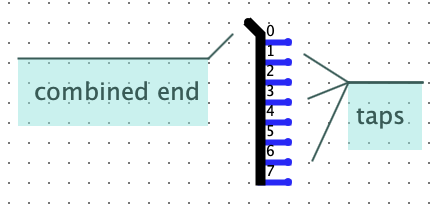

Found in Wiring Library

The Split/Join Signals component, or "splitter" for short, is used to join or split signals and buses. A splitter is very flexible in how it can be used:
Split a bus: It can split a single n-bit bus into n individual 1-bit signals.
Join signals: It can do the opposite, joining n individual 1-bit signals, into a single n-bit bus.
Merge or partition equal-sized buses: It can split an 12-bit bus into three 4-bit buses, or four 3-bit buses, or two 6-bit buses, or other similar combinations, or do the opposite, merging multiple smaller buses into one larger bus.
Merge or re-partition unequal-sized buses and signals: You can mix and match different width buses. For example, it can merge a 4-bit bus, two 2-bit buses, a 3-bit bus, and a 1-bit wire, all together to form a single 12-bit bus, or it can do the the opposite, splitting the 12-bit bus into smaller unequal sized buses and signals.
Pull signals out of a bus: A common use case is "tapping" into a bus to pull out one or more bits. Given an 8-bit bus, a splitter can be used to extract just bit number 7 (the left, most significant bit), or just bit number 0 (the right, least significant bit), or just bits 3, 2, 1, and 0 (the bottom half), or any other combination of bits.


Each splitter has a combined end, and one or more taps. The Fan Out property controls how many taps there are. The bit-width property controls the width of combined end, and also controls how many bits are available for the taps. Other properties allow you to assign each bit from the combined end to one of the taps. Or, you can select "None" for a bit to indicate that bit isn't used by any of the taps.Note: Each bit can only be assigned to one tap. So the combined end has "all the bits" in the splitter. And the taps, taken together, can't have duplicate copies of any of those bits. But there is no requirement that the taps, taken together, cover all the bits: there can be bits "missing" from the taps. And some taps can be empty, carrying no signals at all, if you want.
Tip: The combined end, and the taps, have no specific direction. In fact, you can mix and match directions freely, even within the same splitter or the same port of a splitter. You can arrange for some signals to flow into certain taps (or parts of a tap) and out (part of) the combined end, while having other signals flowing into (other parts of) the combined end and out of other (or other parts of) some taps.
Logisim's simulation engine treats splitters specially when propagating values within a circuit. Unlike all other components, splitters have no "delay" or direction. Essentially, the simulator internally decomposes all buses and splitters into an equivalent arrangement of individual 1-bit wires.
Note: The term splitter is a non-standard term, unique to Logisim as far as I know. I am unaware of any standard term for such a concept. Sometimes they are called a "breakout harness", "bus breakout", or just "breakout". In automotive wiring, and some other electronics, it might be called a "wiring harness" or "cable harness", though a wiring harness often has taps scattered along its length and might have more than one connectors at each end, rather than a single distinct "combined end".
To distinguish the several connecting points for a splitter, we refer to the single connecting point one side as its combined end, and we refer to the multiple connecting points on the other side as its split ends.
A value holding all of the bits traveling through the splitter.
The number of split ends is specified in the Fan Out attribute, and each split end has an index that is at least 0 and less than the Fan Out attribute. For each split end, all bits for which Bit x refers to its index travels through that split end; the order of these bits is the same as their order within the combined end.
When the component is selected or being added,
the digits '0' through '9' alter its Fan Out
attribute,
Alt-0 through Alt-9 alter both the Fan Out
and Bit Width In
attributes,
and the arrow keys alter its Facing
attribute.
The location of the split ends relative to the combined end.
The number of split ends.
The bit width of the combined end.
Supports different ways of depicting the splitter in the circuit.
The Left-handed
option (the default) draws a spine going left from the
combined end, with a labeled line coming from the spine for each split end.
The Right-handed
option is the same except the spine goes right (if you're
facing according to the Facing attribute).
The Centered
option centers the spine so it goes in roughly equal directions
left and right.
And the Legacy
option draws diagonal lines to each split end, without labels;
this option is primarily for compatibility with versions
older than 2.7.0, when this was the only option for splitter appearance.
Controls how far appart the split end pins are placed.
The index of the split end to which bit x of the combined end corresponds. The split ends are indexed starting from 0 at the top (for a splitter facing east or west) or from 0 at the left/west (for a splitter facing north or south). A bit can be specified to correspond to none of the split ends. There is no way for a bit to correspond to multiple split ends.
Sometimes you can avoid twiddling each individual Bit x attribute by bringing up the pop-up menu for a splitter (usually by right-clicking or control-clicking it). The pop-up menu includes options labeled Distribute Ascending and Distribute Descending. The Distribute Ascending option distributes the bits so that each split end receives the same number of bits, starting from end 0. (If the number of split ends doesn't divide exactly into the number of bits, then the bits are distributed as evenly as possible.) Distribute Descending does the same but starts from the highest-numbered end.
None.
Supports VHDL and Verilog synthesis.